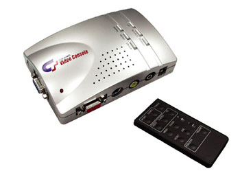
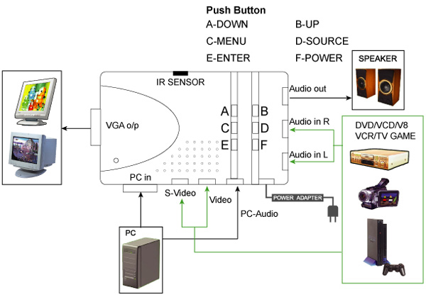
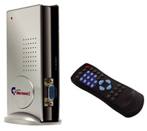
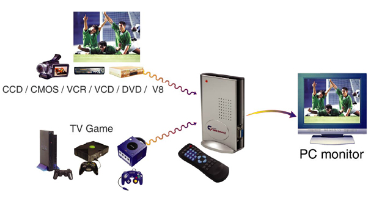
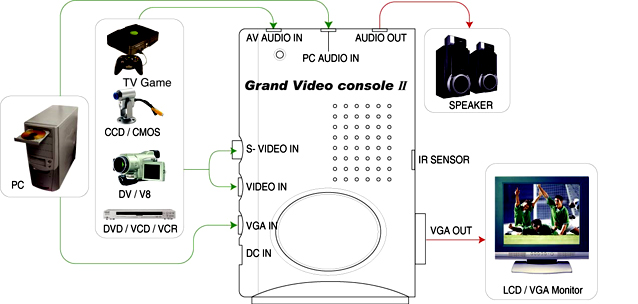
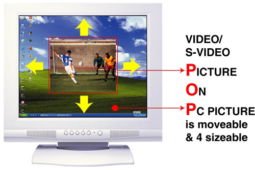
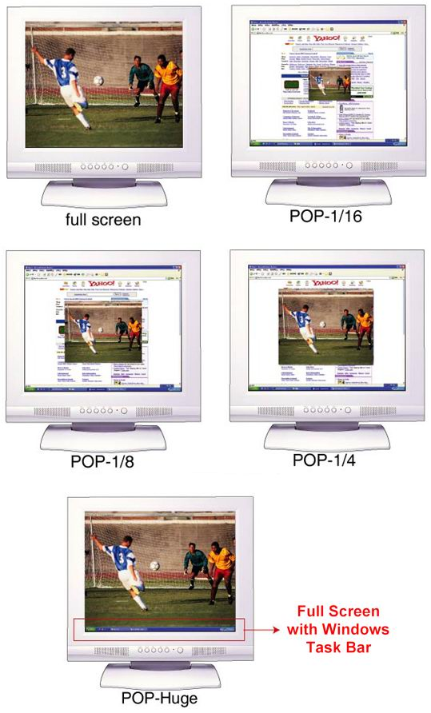

|
:: Expertise in high tech digital and analog display technologies ::
GRANDTEC has developed some unique leading edge video converter products,
such as the “Video to VGA consoles” featured below.
These devices allow you to convert a standard PAL or NTSC video signal into an RGB monitor signal that is suitable for display on a conventional computer CRT monitor or LCD screen.
The Video to VGA consoles are perfect for corporate/office environments where there is no shortage of monitors -- so finding a television set to display a presentation or output a promotional video is no longer an issue! The possibilities are endless with many users grabbing consoles to take home from the office!
Here are some example input devices you can connect to the consoles:
.: Computer (can remain connected to allow easy switching to other inputs) :.
.: Video Cassette Recorder :.
.: DVD / Media Player :.
.: Video Camera :.
.: DV/Digital Camera :.
.: Audio Input (includes speaker output) :.
.: Game Console (hint: keep one hidden under the desk at work for lunch breaks!) :.
Model: Grand Video Console
(High Resolution Video to VGA converter, up to 1024x768)

The Grand Video Console is a Video to VGA converter for displaying a High Resolution Video Picture. The DEINTERLACE function provides the highest quality picture and gives sharp, stable image output to VGA. The input Video System auto-detects 50-to-60Hz frame rates and Outputs 60Hz & 75Hz to a CRT/LCD monitor. Menu driven with OSD (on screen display). It is easy to install, easy to operate, instantly switches the source between PC, Video and S-Video with a single button and turns your monitor into a high resolution general purpose output device. VGA output can be up to 1024X768 (60Hz & 75Hz) resolution. You will extend the functions of your computer, enjoy DVD/VCR programming, and hook up Game devices (e.g. Sony Playstation 2, Microsoft XBOX), freely and easily.
.: Features :.
* The DEINTERLACE can provide high quality picture, It can give sharp, stable image output to VGA.
* Compatible for Multi Signal inputs: Video, S-Video, PC ( bypass ).
* Input Video system 50-to-60HZ frame rate detection (NTSC/PAL(SECAM) for Video, S-Video).
* The output mode can be changed from 640*480, 800*600 to 1024*768. (60Hz & 75Hz)
* No software driver required. It is applicable to all the O/S.
* Compact body and easy installation, no need to uncover PC case. No PC compatibility problem.
* Supports 3:2 pulldown conversion for film mode.
* Supports 2:2 pulldown graphic mode.
* 3D Motion-adaptive interfiled de-interlacing.
* Supports function OSD (on screen display) control.
* OSD control menu : BRIGHTNESS, CONTRAST, COLOR, HUE, SHARPNESS, PICTURE MODE,
RESOLUTION, FREQUENCY, RESET.
* PICTURE MODE : SPORT MODE, STATIC MODE.
* RESOLUTION : 640*480, 800*600 and 1024*768.
* FREQUENCY : 60 Hz and 75 Hz for each resolution.
* RESET : RESET to default setting.
* Panel button supports POWER, SOURCE, MENU, ENTER, UP & DOWN.
* Built-in microprocessor.
.: System Requirements :.
* No specific PC system required.
* VESA compatible VGA monitor.
* Video input device (e.g. VCR, VCD, DVD, V8, LD player, TV game devices, etc.)
.: Hardware Connection and Application Diagrams :.

Model: Grand Video Console II
(High Resolution Video to VGA converter with P.O.P., up to 1280x1024)

As with its little brother, the Grand Video Console II is a Video to VGA converter with Enhanced 3D motion adaptive de-interlacing. Console II provides a high quality picture and gives sharp & stable image output to VGA. Built-in POP (Picture On Picture) function enables you to work with your PC and view VIDEO/S-VIDEO output in a window at the same time. The POP picture is resizable and movable over your PC desktop screen. VGA output can be up to SXGA (1280x1024 @ 60Hz & 75Hz) resolution. Plug it in! -- You will extend the functions of your computer and enjoy your choice of video output freely and easily.
.: Features :.
* Plug n Play. Pure hardware, no software and driver is required.
* Support Picture On Picture (Video/S-video Picture On PC Picture) function
* 4 resizable (1/4, 1/8, 1/16 & POP-Huge) POP windows up to full screen display.
(POP location is moveable).
* Resolution can be up to: 640*480, 800*600, 1024*768, 1280*1024 (60&75 Hz) modes.
* Multi-language OSD support: ENGLISH, FRENCH, GERMAN, SPANISH, ITALIAN,
DUTCH (Nederlands), JAPAN. ( Optional )
* Enhanced 3D motion adaptive de-interlacing and adaptive 3D non-linear noise reduction filter.
* I/P: Video, S-video, VGA &Audio1, Audio2.
* O/P: VGA, Audio.
* Supports sleep time and Auto power on setting function.
* Supports 3:2 pull down conversions for film mode.
* All functions accessible via included remote control.
.: Hardware Connection and Application Diagrams :.


.: Picture on Picture - Examples :.


CALL US NOW FOR IMMEDIATE SALES SUPPORT!
|